Yolanda Martinez (WSJ) & Luis Melgar (WAMU)
1. Keep it consistent. Things that are the same should look the same.
2. Everybody loves maps, but not every dataset involving states or counties needs to be a map.
3. Colors are great, but too many colors can be overwhelming and can make your graphic hard to read. Keep your palettes simple. Use color to stress what it's important.
4. Sketch by hand before using any software. Think about what data you have in your dataset (time, geography, multiple variables...).
5. You don't need to put everything in one graphic. Sometimes, you need more than one graphic to explain something.
6. Learn how to use graphics. Don't choose your graphic because of their asthetics. Firt, think about what do you want your audience to learn from that graphic and what chart fits better with your data.
Datawrapper is a free tool that allows you to create responsive graphics that can be embeded. You can find Datawrapper's website here.
If you don't have one, you'll need to create an account. It's pretty simple, you can even do it using your Google account.
GO TO HOW TO DO A MAP1. Copy the data from this Google spreadsheet.
2. Go to Datawrapper and click on New Chart, in the menu in the top.
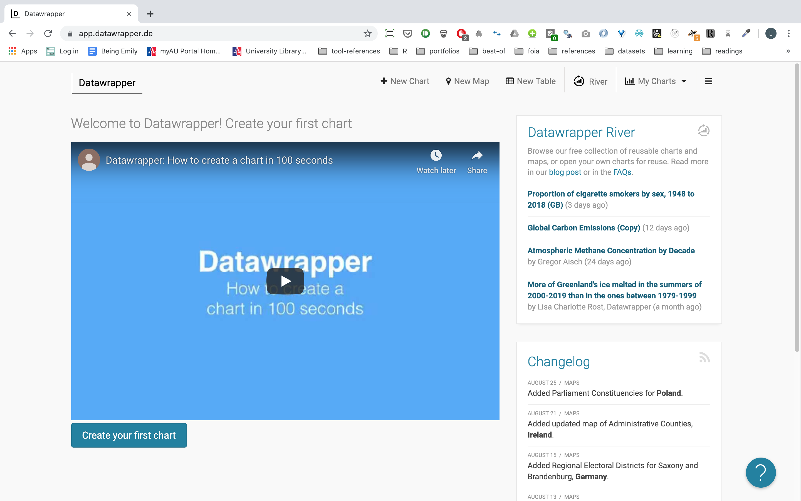3. Add the data that you want to use in the graphic.
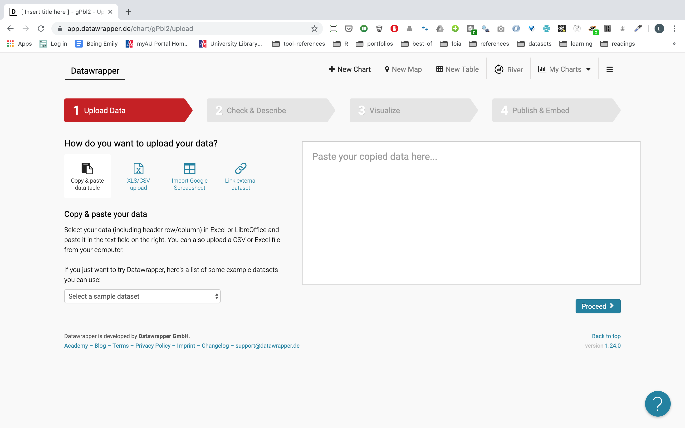You have four options to upload the data.
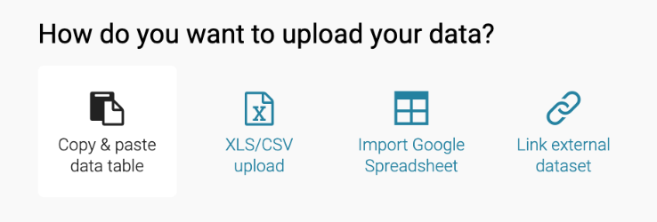4. Once that you have uploaded the data, click on the 'Proceed' button. You will see how your data looks like and what type of data is stored in each column – number, date, text... –
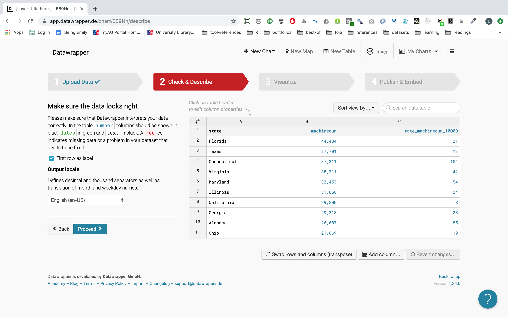[You can skip this part, if you want] You can select each column by clicking on its header. It allows you to change the type of data, see the distribution in the data, run calculations...
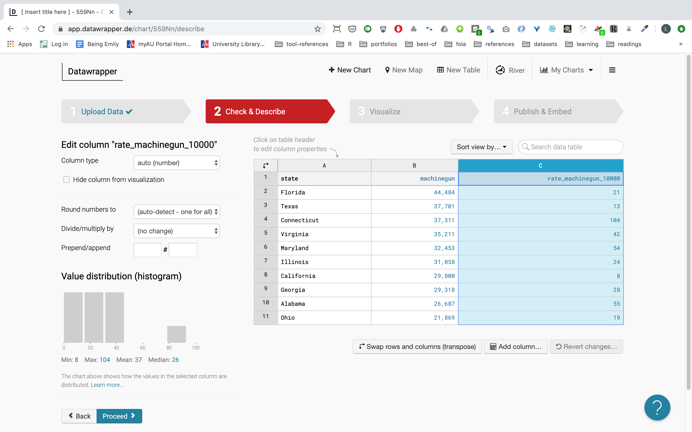By default you'll see a line chart.
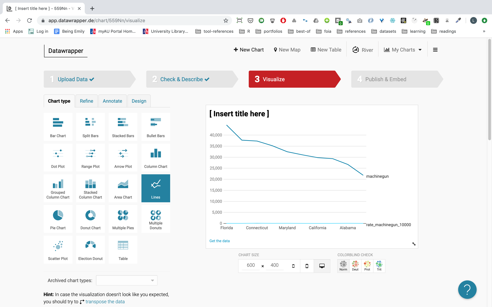But you can change that in the menu on the left side of the screen. In this case, we're using a bar chart.
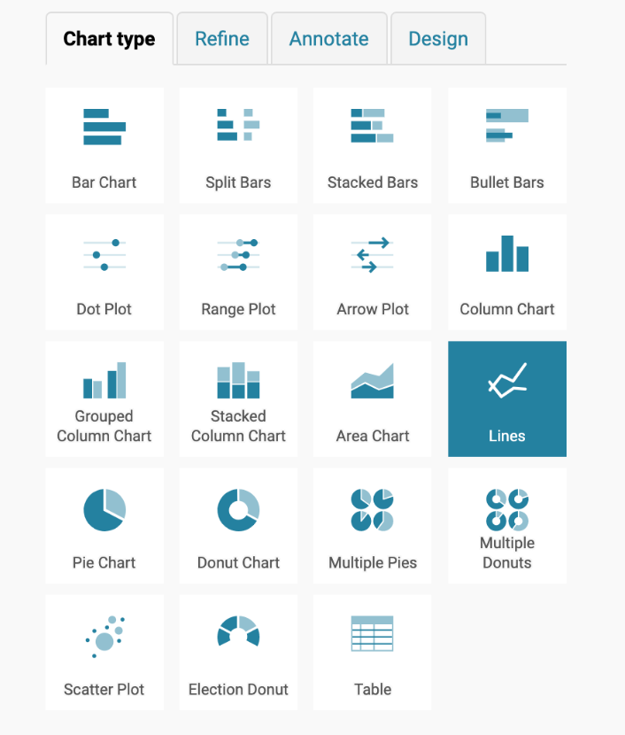Let's give some style to this graphic. Click on the next tab in the menu: 'Refine.'
5. Modify the asthetics of you graphic. You can change the colors, thead axes, the position of the labels...
In this case I want the bars, and I want them to be orange, but I want Florida to be in a darker shade of orange. I also prefer the value labels align to the right and a thin line between bars.
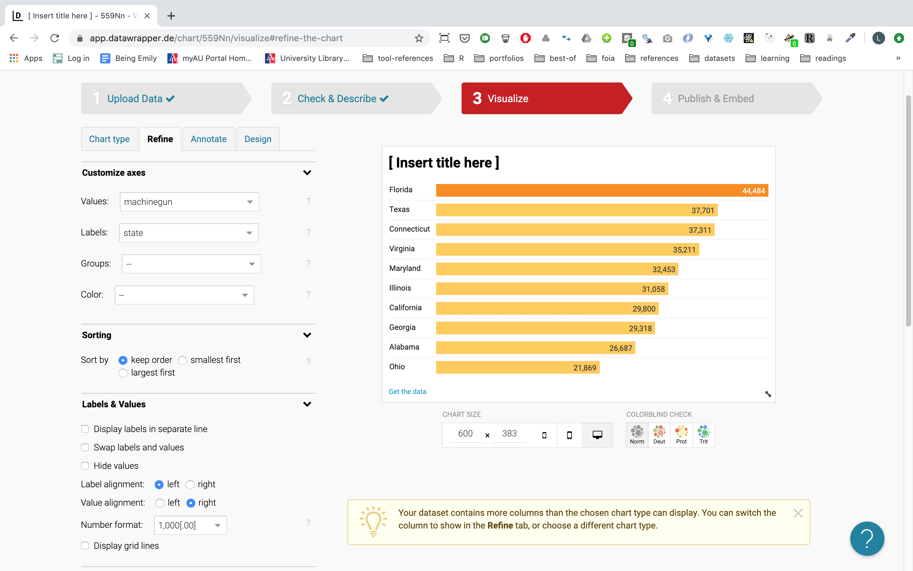You can modify all of that in the menu in the left. With the 'base color' you can choose how you want the bars to look like, but you'll need to use the 'customize' option to modify the color of specific bars.
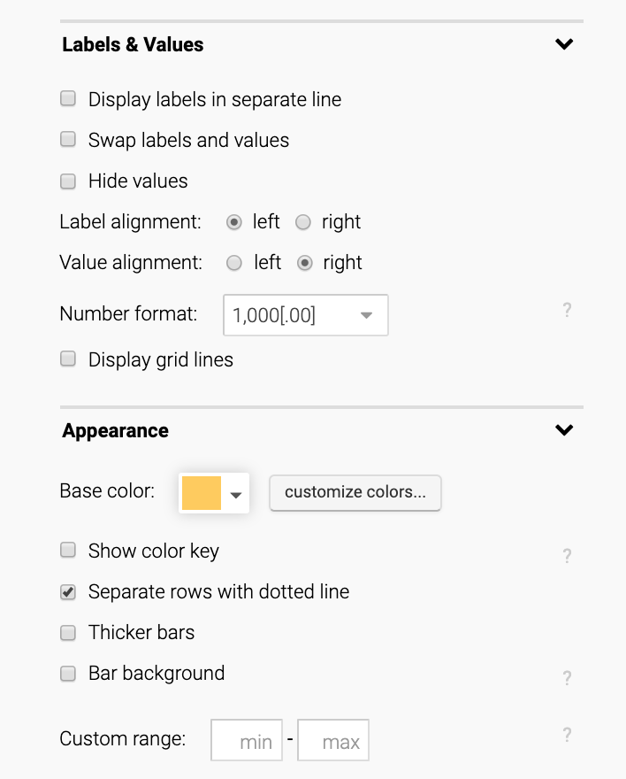6. Once that you're happy with the outcome, click on 'Proceed' so you can add the finishing touches to the graphic. In the 'Annotate' tab you can include a title, a subtitle, source, a link to where the data comes from...
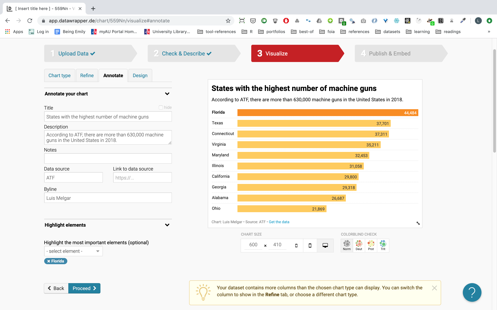Done with the annotation? Click 'Proceed.' It will take you to the 'Design' tab. Let's skip this one, click 'Proceed again'.
7. Now let's publish the graphic. Click on 'Publish chart'.
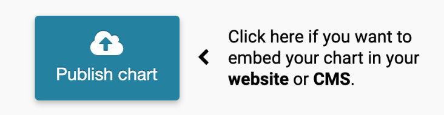Once that the graphic is published, you can use the embed code and add it to your website. If you want to share the result, you can also copy the URL – it usually looks nicer in the 'Normal size.'
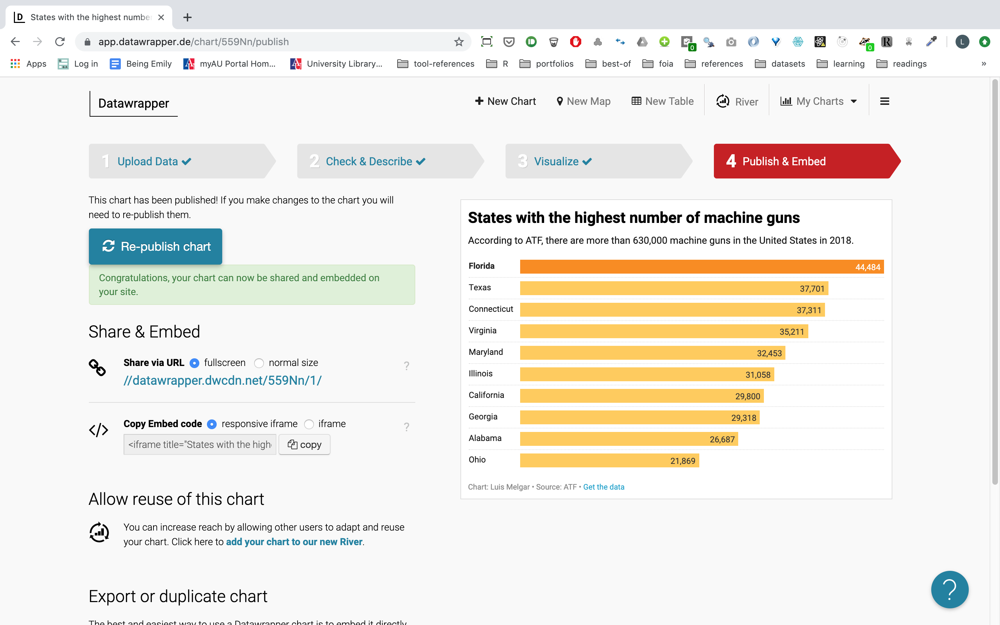